TourDeFrance
Jim Gruman
April 7, 2020
Last updated: 2020-10-10
Checks: 7 0
Knit directory: myTidyTuesday/
This reproducible R Markdown analysis was created with workflowr (version 1.6.2). The Checks tab describes the reproducibility checks that were applied when the results were created. The Past versions tab lists the development history.
Great! Since the R Markdown file has been committed to the Git repository, you know the exact version of the code that produced these results.
Great job! The global environment was empty. Objects defined in the global environment can affect the analysis in your R Markdown file in unknown ways. For reproduciblity it’s best to always run the code in an empty environment.
The command set.seed(20200907) was run prior to running the code in the R Markdown file. Setting a seed ensures that any results that rely on randomness, e.g. subsampling or permutations, are reproducible.
Great job! Recording the operating system, R version, and package versions is critical for reproducibility.
Nice! There were no cached chunks for this analysis, so you can be confident that you successfully produced the results during this run.
Great job! Using relative paths to the files within your workflowr project makes it easier to run your code on other machines.
Great! You are using Git for version control. Tracking code development and connecting the code version to the results is critical for reproducibility.
The results in this page were generated with repository version 467d8cf. See the Past versions tab to see a history of the changes made to the R Markdown and HTML files.
Note that you need to be careful to ensure that all relevant files for the analysis have been committed to Git prior to generating the results (you can use wflow_publish or wflow_git_commit). workflowr only checks the R Markdown file, but you know if there are other scripts or data files that it depends on. Below is the status of the Git repository when the results were generated:
Ignored files:
Ignored: .Rhistory
Ignored: .Rproj.user/
Untracked files:
Untracked: figure/
Note that any generated files, e.g. HTML, png, CSS, etc., are not included in this status report because it is ok for generated content to have uncommitted changes.
These are the previous versions of the repository in which changes were made to the R Markdown (analysis/TourDeFrance.Rmd) and HTML (docs/TourDeFrance.html) files. If you’ve configured a remote Git repository (see ?wflow_git_remote), click on the hyperlinks in the table below to view the files as they were in that past version.
| File | Version | Author | Date | Message |
|---|---|---|---|---|
| html | fb9236f | opus1993 | 2020-09-08 | Build site. |
| Rmd | 21fa017 | opus1993 | 2020-09-08 | wflow_publish(“analysis/TourDeFrance.Rmd”) |
| html | 9098182 | opus1993 | 2020-09-07 | Build site. |
| Rmd | fa785d9 | opus1993 | 2020-09-07 | wflow_publish(“analysis/TourDeFrance.Rmd”) |
Visualising Tour De France Data
Inspired by the work of Alastair Rushworth at Visualising Tour De France Data In R

and by the R4DS learning community #TidyTuesday
Importing Libraries and Datasets
library(tidyverse)
library(paletteer)
library(ggtext)
library(rvest)
theme_set(hrbrthemes::theme_ipsum())
library(lubridate)
library(patchwork)
tuesdata <- tidytuesdayR::tt_load('2020-04-07')
Downloading file 1 of 3: `stage_data.csv`
Downloading file 2 of 3: `tdf_stages.csv`
Downloading file 3 of 3: `tdf_winners.csv`tdf_winners <- tuesdata$tdf_winners %>%
mutate(year = ymd(year(start_date),truncated = 2L),
speed = distance / time_overall)
stage_data <- tuesdata$stage_data
tdf_stages <- tuesdata$tdf_stages %>%
janitor::clean_names() %>%
mutate(year = year(date))
showtext::showtext_auto()library(rvest)
cf_io <- read_html("https://www.countryflags.io/")
country_ids <- cf_io %>%
html_nodes(".item_country") %>%
lapply(function(el){
key <- el %>%
html_text %>%
str_split("\\n") %>%
`[[`(1) %>%
trimws() %>%
{
.[nchar(.)>0]
}
data.frame(
code = key[1],
nationality = key[2]
)
}) %>%
bind_rows
get_country_flag <- function(x){
urls <- sapply(x, function(x){
code <- country_ids$code[which(country_ids$nationality == x)]
file.path("https://www.countryflags.io", code, "flat/64.png")
})
paste0("<img src='",urls,"' width='30' />")
}Nationalities of the Winners
tdf_nations<-tdf_winners %>%
mutate(nationality = stringr::str_squish(nationality),
nationality = case_when(
nationality == "Great Britain" ~ "United Kingdom",
TRUE ~ nationality
)) %>%
count(nationality, sort = TRUE) %>%
mutate(nationality = fct_reorder(nationality,n)) %>%
top_n(8, n)
flag_labels <- get_country_flag(tdf_nations$nationality)
pal <- RColorBrewer::brewer.pal('Set1',n=8)
nations<- tdf_nations %>%
ggplot(aes(n, nationality))+
geom_bar(fill = "green", stat = "identity") +
scale_y_discrete(name = NULL, labels = flag_labels) +
scale_fill_discrete(guide=FALSE)+
theme(axis.text.y = ggtext::element_markdown(color = "black", size = 11),
axis.title.y = element_blank(),
plot.title.position = "plot") +
expand_limits(x = c(0,45)) +
labs( title = "National Wins",
caption = paste0('@Jim_Gruman | #TidyTuesday | ', Sys.Date()))
nations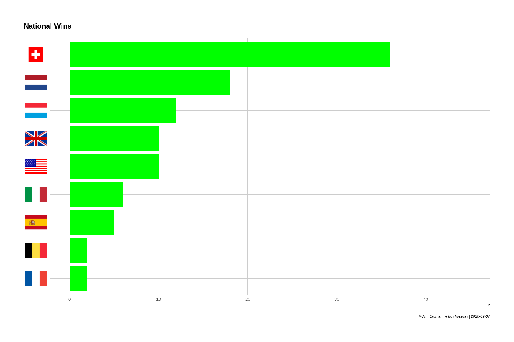
Physical characteristics and race characteristics by decade
by_decade <-tdf_winners %>%
group_by(decade = 10 * (year(year) %/% 10 )) %>%
summarize(winner_age = mean(age, na.rm = TRUE),
winner_height = mean(height, na.rm = TRUE),
winner_weight = mean(weight, na.rm = TRUE),
winner_margin = mean(time_margin, na.rm = TRUE),
winner_time = mean(time_overall, na.rm = TRUE),
winner_speed = mean(speed, na.rm = TRUE))
by_decade %>%
ggplot(aes(decade, winner_age)) +
geom_line(color = "#9EB0FFFF", size = 3) +
expand_limits(y = 0)+
labs( y = "",
title = "Average Age of Tour de France Winners By Decade",
subtitle = 'source: Alastair Rushworths R Data Package tdf and Kaggle',
caption = paste0('@Jim_Gruman | #TidyTuesday | ', Sys.Date())
)+
theme(legend.position = "",
plot.title.position = "plot")+
scale_color_paletteer_d("nord::aurora")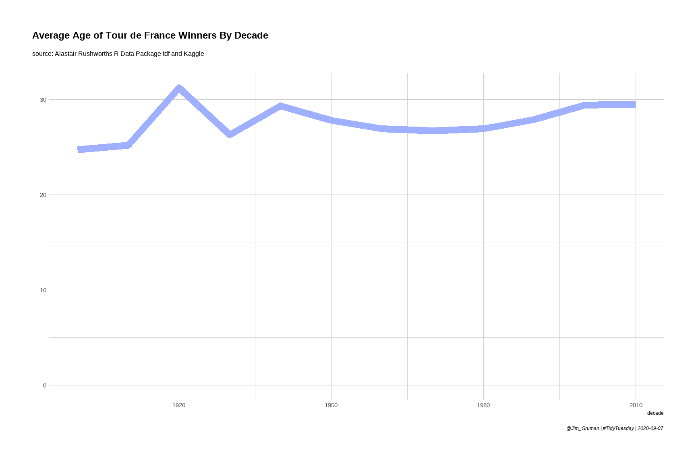
by_decade %>%
ggplot(aes(decade, winner_margin))+
geom_line(color = "#5AA3DAFF", size = 3) +
expand_limits(y = 0)+
labs( y = "Hours",
title = "Margin of Victory of Tour de France Winners By Decade",
subtitle = 'source: Alastair Rushworths R Data Package tdf and Kaggle',
caption = paste0('@Jim_Gruman | #TidyTuesday | ', Sys.Date())
)+
theme(legend.position = "",
plot.title.position = "plot")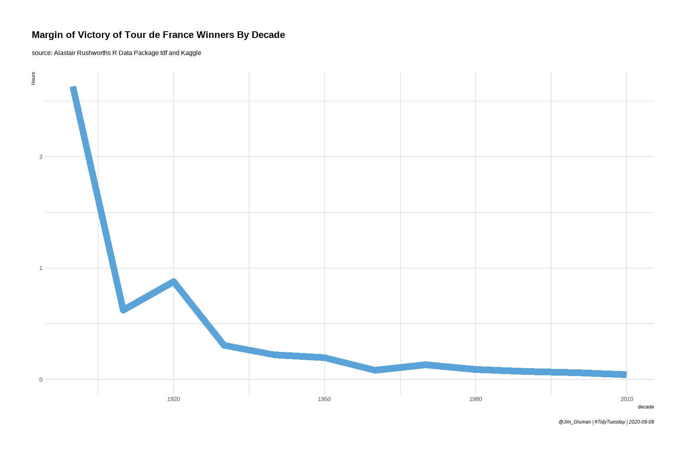
by_decade %>%
ggplot(aes(decade, winner_speed))+
geom_line(color = "#2D7597FF", size = 3) +
expand_limits(y = 0)+
labs( y = "Hours",
title = "Average Speed of Tour de France Winners By Decade",
subtitle = 'source: Alastair Rushworths R Data Package tdf and Kaggle',
caption = paste0('@Jim_Gruman | #TidyTuesday | ', Sys.Date())
)+
theme(legend.position = "",
plot.title.position = "plot")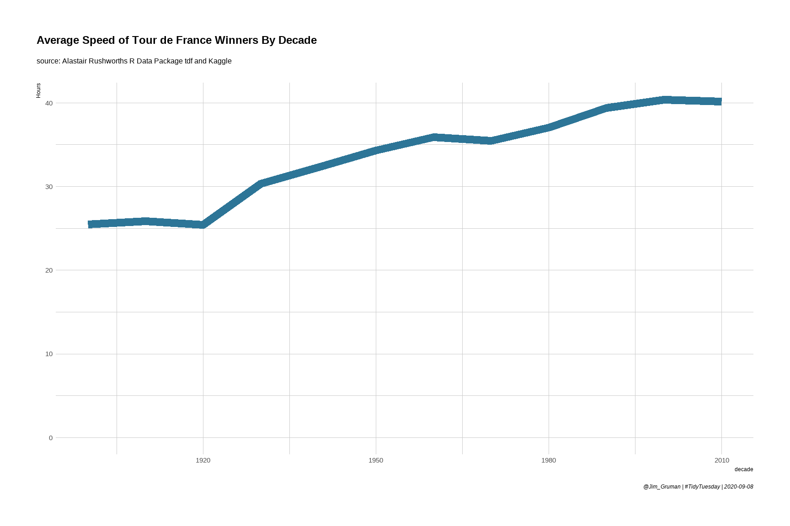
# average margin has been shrinkingLife Expectancy of TDF winners with survival analysis
extrapolated for the riders 38 still alive (not yet dead)
library(survival)
surv_model <- tdf_winners %>%
distinct(winner_name, .keep_all = TRUE) %>%
transmute(birth_year = year(born),
death_year = year(died),
dead = as.integer(!is.na(death_year))) %>%
mutate(age_at_death = coalesce(death_year, 2020)- birth_year) %>%
survfit(Surv(age_at_death, dead) ~ 1, data = .)
surv_model %>%
plot()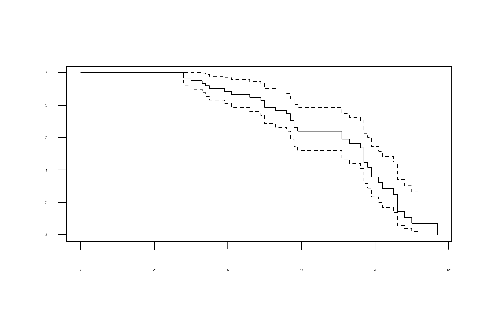
library(broom)
glance(surv_model)# A tibble: 1 x 10
records n.max n.start events rmean rmean.std.error median conf.low conf.high
<dbl> <dbl> <dbl> <dbl> <dbl> <dbl> <dbl> <dbl> <dbl>
1 63 63 63 38 69.6 2.69 77 71 82
# ... with 1 more variable: nobs <int>Of the 63 Tour De France winners, 38 are still alive. After accounting for survival expectations for the living, the median life expectancy of a Tour de France winner is estimated as 77 years old.
Stage data
p1<-stage_data %>%
group_by(decade = 10 * (year %/% 10 )) %>%
distinct(rider, edition, age) %>%
ggplot(aes(decade, age)) +
geom_jitter(color = "#9EB0FFFF", size = 0.5, alpha = 0.1)
p1 +
geom_line(data = by_decade, aes(decade, winner_age),
color = "#2D7597FF", size = 3) +
expand_limits(y = 0)+
labs( y = "", x= "",
title = "Average Age of Tour de France Winners By Decade",
subtitle = 'source: Alastair Rushworths R Data Package tdf and Kaggle',
caption = paste0('@Jim_Gruman | #TidyTuesday | ', Sys.Date())
)+
theme(legend.position = "",
plot.title.position = "plot")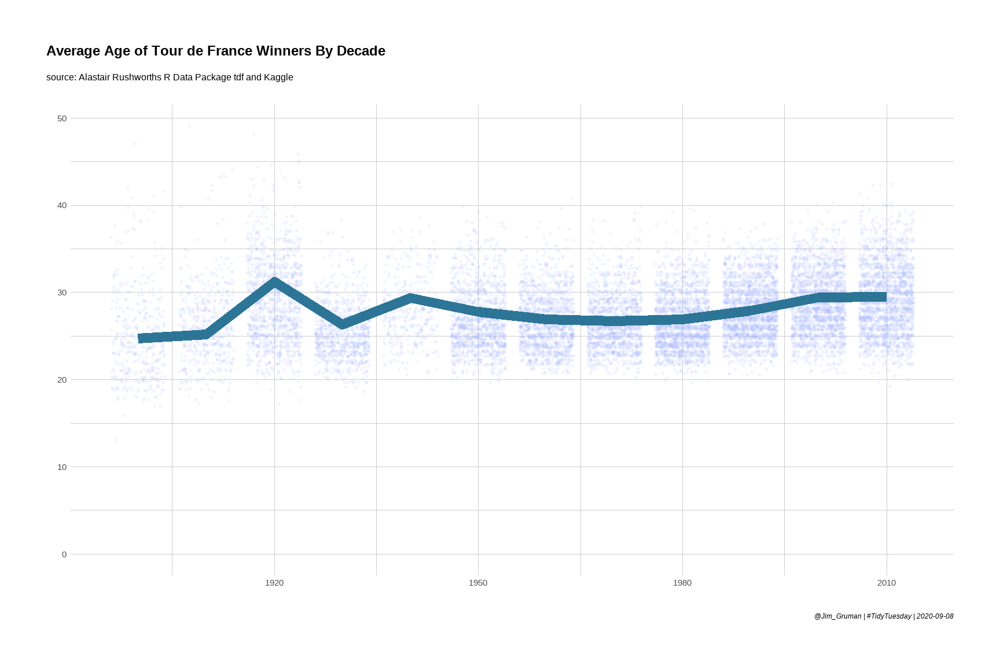
stages_joined<-stage_data %>%
tidyr::extract(stage_results_id, "stage", "stage-(.*)") %>%
mutate(stage = if_else(year %in% 1967:1968 & stage == 0, "1a", stage),
stage = if_else(year %in% 1967:1968 & stage == 1,"1b", stage),
stage = if_else(year %in% 1969:2012 & stage == 0, "P", stage)) %>%
filter(year < 2018) %>%
left_join(tdf_stages, by = c("year","stage")) %>%
select(-winner, bib_number, winner_country) %>%
mutate(rank = as.integer(rank)) %>%
group_by(year, stage) %>%
mutate(finishers = sum(!is.na(rank))) %>%
ungroup() %>%
mutate(percentile = 1- rank / finishers)
stages_joined %>%
group_by(winner_country) %>%
summarize(stages = n(), median_percentile = median(percentile, na.rm = TRUE)) %>%
arrange(desc(stages))# A tibble: 41 x 3
winner_country stages median_percentile
<chr> <int> <dbl>
1 FRA 63231 0.495
2 BEL 45020 0.495
3 ITA 28970 0.496
4 NED 20185 0.496
5 ESP 17210 0.5
6 GER 11659 0.497
7 GBR 10858 0.5
8 SUI 6632 0.497
9 LUX 6100 0.5
10 USA 6063 0.497
# ... with 31 more rowsstages_joined %>%
count(year, stage) %>%
ggplot(aes(n)) +
geom_histogram()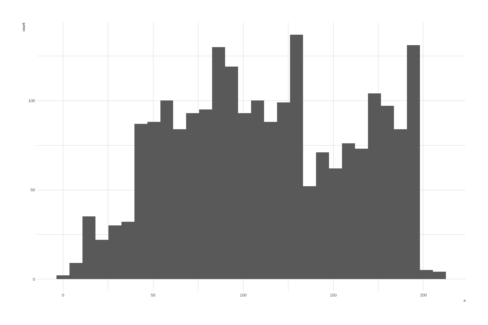
# it appears that some racers are eliminated or drop out as stages are completed
total_points <- stages_joined %>%
group_by(year, rider) %>%
summarize(total_points = sum(points, na.rm = TRUE)) %>%
mutate(points_rank = percent_rank(total_points)) %>%
ungroup()Does the winner of the first stage predict their final point ranking?
stages_joined %>%
filter(stage == "1") %>%
inner_join(total_points, by = c("year","rider")) %>%
select(year, rider,
percentile_first_stage = percentile,
points_rank) %>%
filter(!is.na(percentile_first_stage)) %>%
mutate(first_stage_bin = cut(percentile_first_stage, seq(0,1,0.1))) %>%
filter(!is.na(first_stage_bin))%>%
ggplot(aes(first_stage_bin, points_rank)) +
geom_boxplot()+
theme(axis.text.x = element_text(angle = 90, hjust = 1),
plot.title.position = "plot")+
scale_y_continuous(labels = scales::percent) +
labs(x = "Decile Perforance in the First Stage",
y = "Overall Points Percentile",
title = "Relationship of TDF First Stage Finish w/ Overall Finish",
subtitle = 'source: Alastair Rushworths R Data Package tdf and Kaggle',
caption = paste0('@Jim_Gruman | #TidyTuesday | ', Sys.Date()))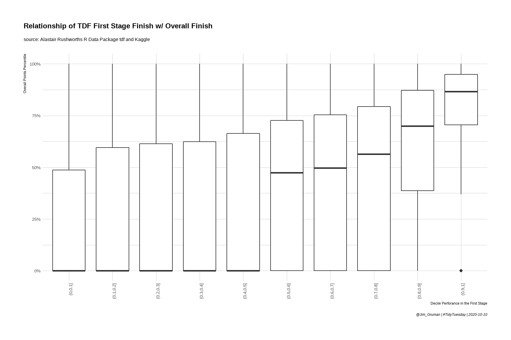
library(gganimate)
library(tidytext)
top_10_2016<-total_points %>%
filter(year == 2016)%>%
top_n(10, total_points)
p<-stages_joined %>%
filter(year == 2016) %>%
semi_join(top_10_2016, by = "rider")%>%
mutate(stage = as.integer(stage),
points = coalesce(points, 0)) %>%
arrange(stage)%>%
group_by(rider) %>%
mutate(cumulative_points = cumsum(points))%>%
ungroup() %>%
# mutate(rider = reorder_within(rider, cumulative_points, stage))%>%
ggplot(aes(cumulative_points, rider,fill = cumulative_points))+
geom_col()+
transition_time(stage)+
theme(legend.position = "none",
plot.title.position = "plot")+
labs(title = "The 2016 Tour de France Stage: {frame_time}",
x = "Cumulative Points at Stage",
y = "")
anim<- animate(p, width = 900, height = 750, end_pause = 50, renderer = gifski_renderer())
anim_save(filename = "docs/assets/TDFanimation.gif", animation = anim)knitr::include_graphics("assets/TDFanimation.gif", error = FALSE)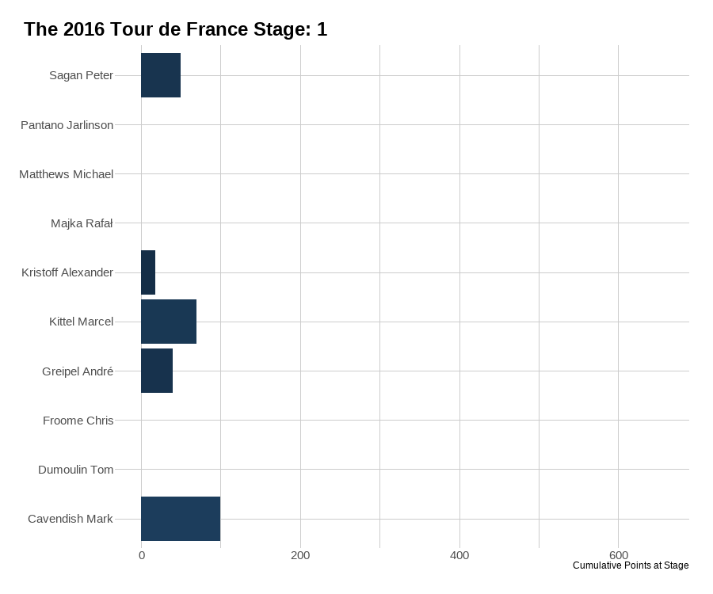
Lets explore the names and life durations of the Tour de France winners
unique(tdf_winners$birth_country) [1] "Italy" "France" "Belgium" "Luxembourg" "Switzerland"
[6] "Spain" "Netherlands" "USA" "Ireland" "Denmark"
[11] "Germany" "Australia" "Kenya" "Wales" "Columbia" winners<- tdf_winners %>%
select(edition,winner_name,born,died,nickname,nationality,start_date, year) %>%
# factor and reorder the winners by birth date
mutate(winner_name = fct_reorder(winner_name, desc(born))) %>%
# compute a life duration in numeric years
mutate(life_duration = as.numeric(as.duration(ymd(born) %--%ymd(died)),"years")) %>%
filter(!is.na(life_duration))
pal <- RColorBrewer::brewer.pal('Set1',n=3)
life_wins<-winners %>%
ggplot()+
geom_linerange(aes(ymin = born,
ymax = died,
x=winner_name,
color=life_duration),lwd=1.1) +
coord_flip() +
labs(x = "Winner",
y = "Year") +
geom_point(aes(x=winner_name,
y=year),
shape=19, size=2,color='grey')+
scale_shape_identity('',
labels = 'Won the \nTour de France',
breaks=c(19),
guide = 'legend') +
scale_colour_gradient2('Lifetime \n(years)',
low = pal[1], mid = pal[2], high=pal[3], midpoint = 60) +
labs(title='Lifespans',
subtitle = 'source: Alastair Rushworths R Data Package tdf and Kaggle')+
guides(colour = guide_legend(order = 1),
shape = guide_legend(order = 2)) +
theme(plot.title.position = "plot")
life_wins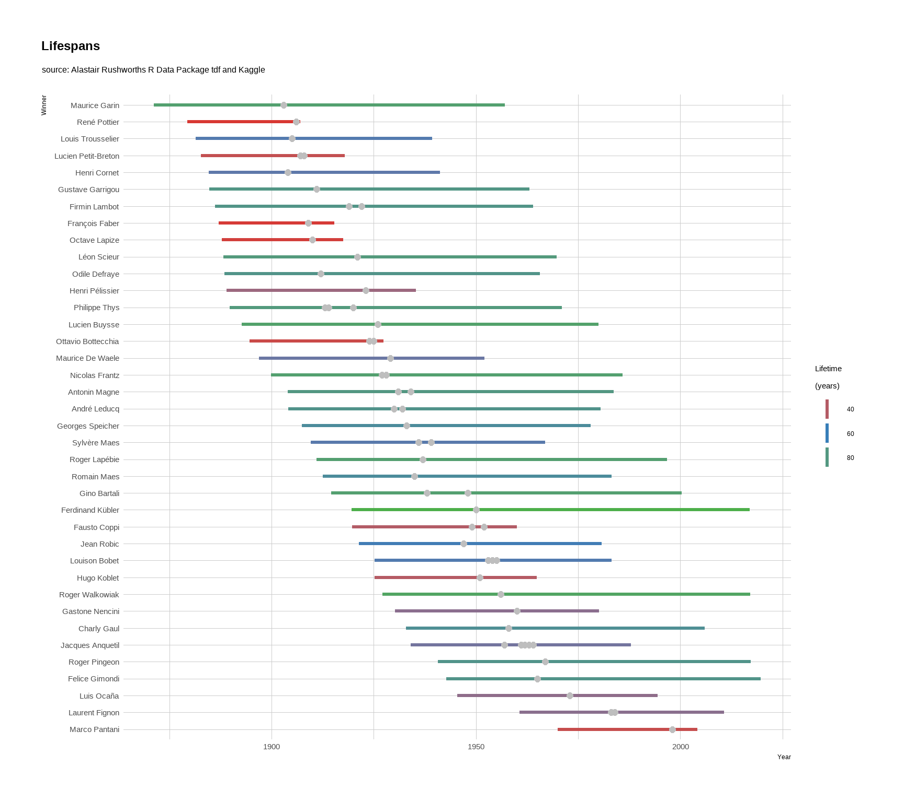
(life_wins / nations ) +
plot_annotation("Tour de France Winners")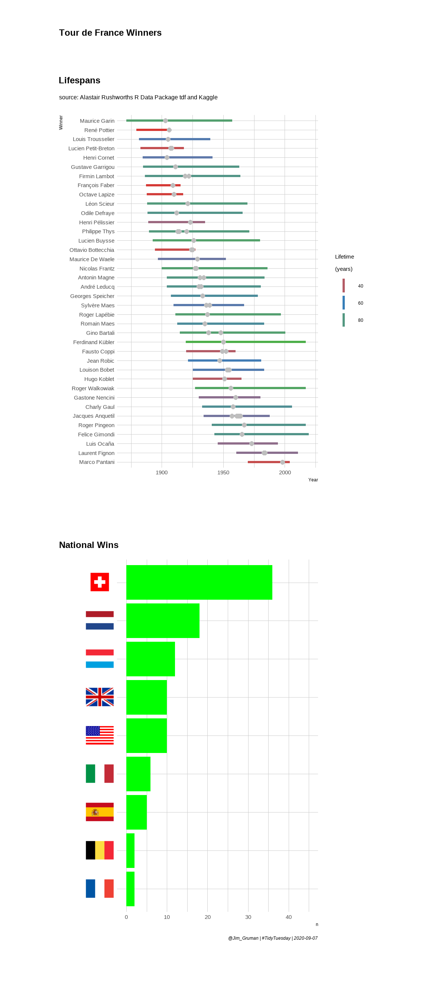
sessionInfo()R version 4.0.0 (2020-04-24)
Platform: x86_64-w64-mingw32/x64 (64-bit)
Running under: Windows 10 x64 (build 19041)
Matrix products: default
locale:
[1] LC_COLLATE=English_United States.1252
[2] LC_CTYPE=English_United States.1252
[3] LC_MONETARY=English_United States.1252
[4] LC_NUMERIC=C
[5] LC_TIME=English_United States.1252
attached base packages:
[1] stats graphics grDevices utils datasets methods base
other attached packages:
[1] tidytext_0.2.6 gganimate_1.0.6 broom_0.7.1
[4] survival_3.2-7 patchwork_1.0.1 lubridate_1.7.9
[7] rvest_0.3.6 xml2_1.3.2 ggtext_0.1.0.9000
[10] paletteer_1.2.0.9000 forcats_0.5.0 stringr_1.4.0
[13] dplyr_1.0.2 purrr_0.3.4 readr_1.4.0
[16] tidyr_1.1.2 tibble_3.0.3 ggplot2_3.3.2
[19] tidyverse_1.3.0 workflowr_1.6.2
loaded via a namespace (and not attached):
[1] bitops_1.0-6 fs_1.5.0 usethis_1.6.3 progress_1.2.2
[5] RColorBrewer_1.1-2 httr_1.4.2 rprojroot_1.3-2 SnowballC_0.7.0
[9] tools_4.0.0 backports_1.1.10 utf8_1.1.4 R6_2.4.1
[13] DBI_1.1.0 colorspace_1.4-1 withr_2.3.0 prettyunits_1.1.1
[17] tidyselect_1.1.0 curl_4.3 compiler_4.0.0 git2r_0.27.1
[21] extrafontdb_1.0 cli_2.0.2 labeling_0.3 scales_1.1.1
[25] systemfonts_0.3.2 digest_0.6.25 rmarkdown_2.4 tidytuesdayR_1.0.1
[29] pkgconfig_2.0.3 htmltools_0.5.0 showtext_0.9 extrafont_0.17
[33] dbplyr_1.4.4 rlang_0.4.7 readxl_1.3.1 rstudioapi_0.11
[37] sysfonts_0.8.1 generics_0.0.2 farver_2.0.3 jsonlite_1.7.1
[41] tokenizers_0.2.1 RCurl_1.98-1.2 magrittr_1.5 Matrix_1.2-18
[45] Rcpp_1.0.5 munsell_0.5.0 fansi_0.4.1 gdtools_0.2.2
[49] lifecycle_0.2.0 stringi_1.5.3 whisker_0.4 yaml_2.2.1
[53] snakecase_0.11.0 plyr_1.8.6 grid_4.0.0 hrbrthemes_0.8.0
[57] blob_1.2.1 promises_1.1.1 crayon_1.3.4 lattice_0.20-41
[61] splines_4.0.0 haven_2.3.1 gridtext_0.1.1 hms_0.5.3
[65] knitr_1.30 pillar_1.4.6 markdown_1.1 reprex_0.3.0
[69] glue_1.4.2 evaluate_0.14 gifski_0.8.6 modelr_0.1.8
[73] tweenr_1.0.1 vctrs_0.3.4 png_0.1-7 httpuv_1.5.4
[77] selectr_0.4-2 Rttf2pt1_1.3.8 cellranger_1.1.0 gtable_0.3.0
[81] rematch2_2.1.2 assertthat_0.2.1 xfun_0.18 janitor_2.0.1
[85] janeaustenr_0.1.5 later_1.1.0.1 showtextdb_3.0 ellipsis_0.3.1